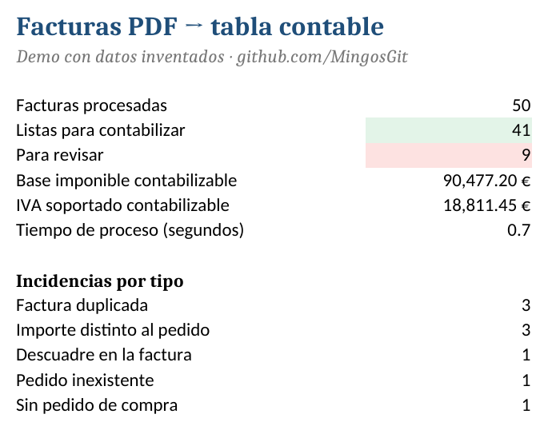
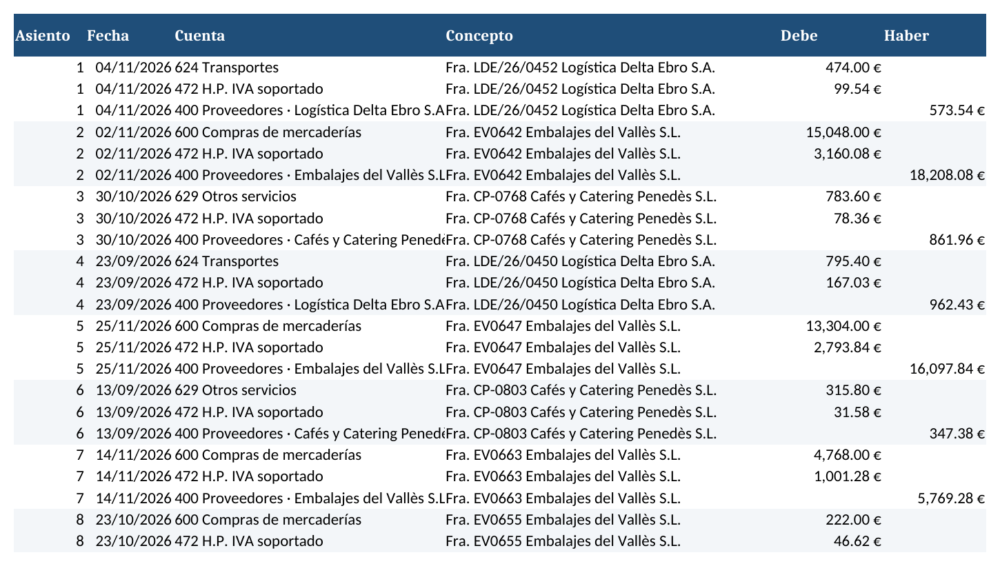
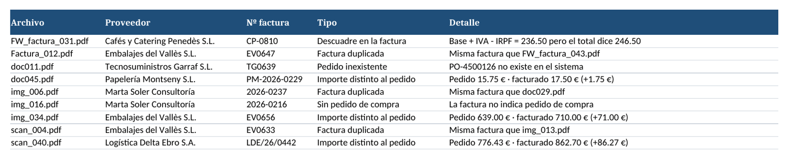

02
What goes in and what comes out




A folder with 50 invoices from 6 suppliers, each with its own layout, turned in under a second into an Excel file ready to post. Reading the PDF isn't the hard part: it's catching the ones that don't add up before they reach the books.
You give it the invoice folder, the supplier master file and the purchase orders. It returns an Excel file with the register of every invoice, the journal entries with debits and credits balanced and a list of the invoices that need a review, explaining why in plain language.
Out of the 50 test invoices, 9 have something wrong hidden on purpose, and it finds all of them:



There's no template per supplier. It looks for the usual labels (Base imponible,
Subtotal, Net amount, Cuota IVA, Retención IRPF…) and understands
Spanish and international number and date formats: 1.234,56 and 1,234.56,
16/09/2026, 2026-09-16 or 30 de octubre de 2026.
By its tax ID against the supplier master file, which also says which expense account each one goes to (600 purchases, 623 professional services, 624 transport… in the Spanish chart of accounts).
Four sheets: summary, invoice register (the ones to review in red), journal entries and issues. The entries include expense, input VAT, withholding tax and supplier, and the tests check that total debits equal total credits.
A classic invoice, a coloured header, one in English with decimal points, a boxed one, a catering one at 10 % VAT and a freelancer's with income-tax withholding.
Chaotic file names (scan_004.pdf, FW_factura_031.pdf…) and the same invoice repeated under another name.
The generator stores what should come out of every invoice. The tests check all 50 documents field by field and that exactly the 9 issues are found, not one more.
Every issue says what's wrong, with figures: “Order €639.00 · invoiced €710.00 (+€71.00)”. No black boxes.